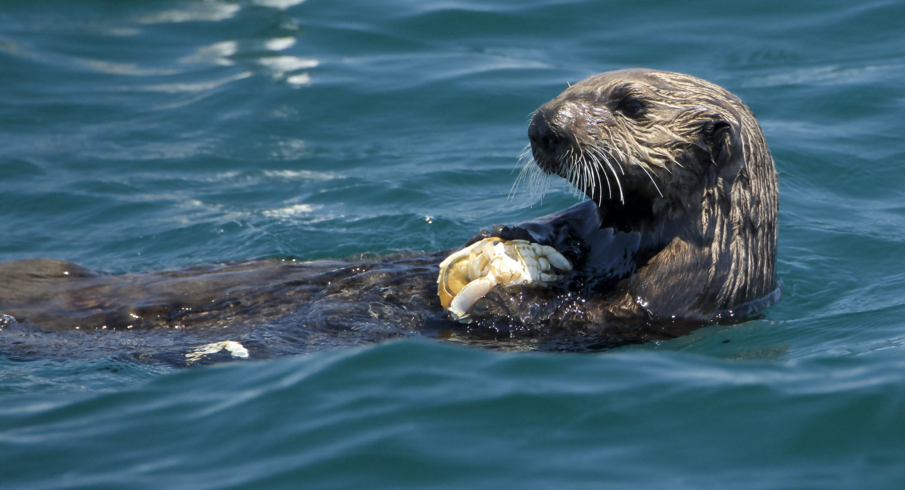
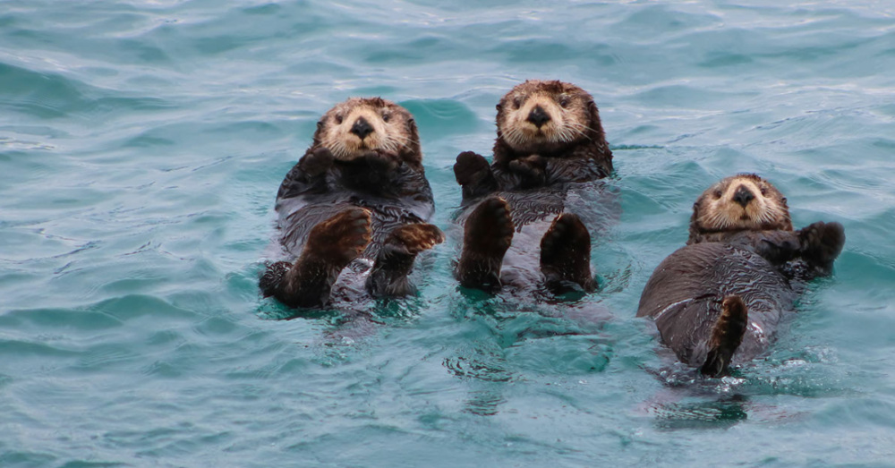

Behavior
Tool Use and Foraging
Sea otters are well known for their intelligence, particularly their ability to use tools. They use rocks to break open the shells of clams, mussels, and sea urchins, making them one of the few tool-using marine mammals. Their diet consists primarily of marine invertebrates, and they eat up to 25% of their body weight daily to sustain their high metabolic rates. This behavior reflects their adaptability and resourcefulness in obtaining food.
Social Dynamics
Sea otters exhibit complex social behavior, often forming groups called rafts. These rafts, which can consist of a few individuals or up to hundreds, are typically segregated by sex, with males and females forming separate groups. Males are territorial, especially in areas rich in food resources. Despite being social, otters spend significant time grooming themselves individually, a vital activity for maintaining the insulating properties of their dense fur.
